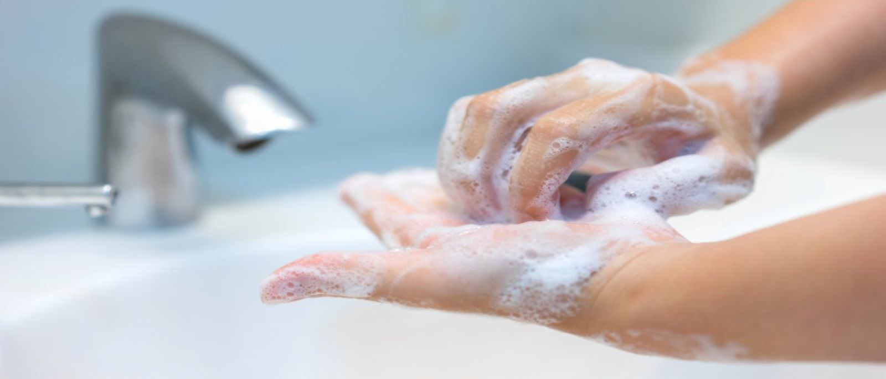
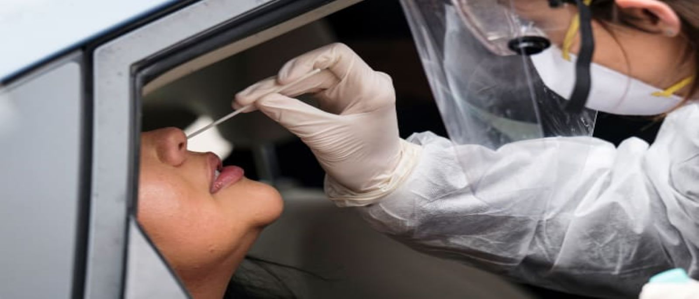

1 / 4

Caption Text
2 / 4

Caption Two
3 / 4

Caption Three
4 / 4

Caption Four
COVID-19 is thought to spread mainly through close contact from person-to-person. People who are in close contact with one another (within about 6 feet) can transmit COVID-19 through respiratory droplets produced when an infected person coughs, sneezes, or talks. These droplets can land in the mouths or noses of people who are nearby or possibly be inhaled into the lungs. COVID-19 may be spread by people who are not showing symptoms. The virus that causes COVID-19 is spreading very easily and sustainably between people. Information from the ongoing COVID-19 pandemic suggest that this virus is spreading more efficiently than influenza, but not as efficiently as measles, which is highly contagious.
People with COVID-19 have had a wide range of symptoms reported – ranging from mild symptoms to severe illness. Symptoms may appear 2-14 days after exposure to the virus. People with these symptoms may have COVID-19:
There is currently no vaccine to prevent coronavirus disease 2019 (COVID-19), so the best way to prevent illness is to avoid being exposed to this virus. Therefore, everyone should Wash your hands often with soap and water for at least 20 seconds especially after you have been in a public place, or after blowing your nose, coughing, or sneezing. If soap and water are not readily available, use a hand sanitizer that contains at least 60% alcohol. Cover all surfaces of your hands and rub them together until they feel dry. Avoid touching your eyes, nose, and mouth with unwashed hands.